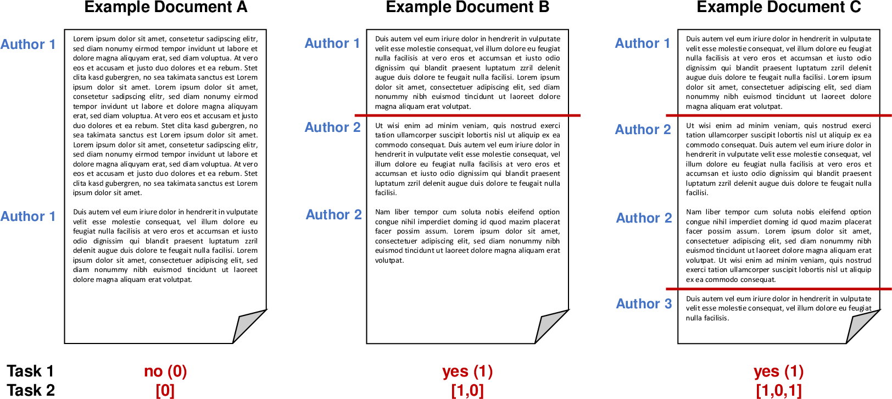

<main>
    <div class="uk-section uk-section-default">
        <div class="uk-container uk-margin-small">
            <h1 class="uk-margin-remove-top">Style Change Detection 2020</h1>
            <ul class="uk-list">
                <li><span data-uk-icon="chevron-down"></span><a class="uk-margin-small-right" href="#synopsis">Synopsis</a></li>
                <li><span data-uk-icon="chevron-down"></span><a class="uk-margin-small-right" href="#task">Task</a></li>
                <li><span data-uk-icon="chevron-down"></span><a class="uk-margin-small-right" href="#data">Data</a></li>
                <li><span data-uk-icon="chevron-down"></span><a class="uk-margin-small-right" href="#evaluation">Evaluation</a></li>
                <li><span data-uk-icon="chevron-down"></span><a class="uk-margin-small-right" href="#submission">Submission</a></li>
                <!--                <li><span data-uk-icon="chevron-down"></span><a class="uk-margin-small-right" href="#results">Results</a></li>-->
                <li><span data-uk-icon="chevron-down"></span><a class="uk-margin-small-right" href="#related-work">Related Work</a></li>
                <li><span data-uk-icon="chevron-down"></span><a class="uk-margin-small-right" href="#task-committee">Task Committee</a></li>
            </ul>
        </div>

        <div class="uk-container uk-margin-medium">

            <h2 id="synopsis">Synopsis</h2>
            <ul>
                <li>Task: Given two documents, determine if they are written by the same author.</li>
                <li>Input: [data]</li>
                <li>Output: [<a href="../pan20-code/style-change-detection/output_verifier.py">verifier</a>][<a href="../pan20-code/style-change-detection/test_output_verifier.py">tests</a>]</li>
                <li>Evaluation: [<a href="../pan20-code/style-change-detection/evaluator.py">code</a>][<a href="../pan20-code/style-change-detection/test_evaluator.py">tests</a>]</li>
                <li>Submission: [submit]</li><!--[<a href="https://www.tira.io/task/authorship-verification/">submit</a>]</li>
                <li>Baseline: [code]</li>-->
            </ul>

            <h2 id="introduction">Introduction</h2>
            <p>The goal of the style change detection task is to identify text positions within a given multi-author document at which the author switches. Detecting these positions is a crucial part of the authorship identification process, and for multi-author document analysis in general. Note that, for this task, we make the assumption that a change in writing style always signifies a change in author. </p>

            <p>Previous editions of the Style Change Detection task aim at e.g., detecting whether a document is single- or multi-authored 
                (<a href="https://pan.webis.de/clef18/pan18-web/style-change-detection.html">2018</a>) or the actual number of authors within a document 
                (<a href="https://pan.webis.de/clef19/pan19-web/style-change-detection.html">2019</a>). Considering the promising results achieved by the submitted approaches, we aim to steer the task back to its original goal: detecting the exact position of authorship changes. Therefore, the task for PAN'20 is to detect whether a document was authored by one or multiple authors and to find the positions of style changes at the paragraph-level. For each pair of consecutive paragraphs of a document, we ask participants to estimate whether there is indeed a style change between those two paragraphs. </p>

            <h2 id="task">Tasks</h2> Given a document, we ask participants to answer the following two questions:
            <ul>
                <li>Was the given document written by multiple authors? (task 1)</li>
                <li>For each pair of consecutive paragraphs in the given document: is there a style change between these paragraphs? (task 2)</li>
            </ul>

            <p>In other words, the goal is to determine whether the given document contains style changes and if it indeed does, we aim to find the position of the change in the document (between paragraphs).</p>
            <p>All documents are provided in English and may contain zero up to ten style changes, resulting from at most three different authors. However, style changes may only occur between paragraphs (i.e., a single paragraph is always authored by a single author and does not contain any style changes).</p>

            <p>The following figure illustrates some possible scenarios and the expected output for the two tasks:</p>
            <br>
            

            <h2 id="data">Data</h2>
            <p>To develop and then test your algorithms, two data sets including ground truth information are provided. Those data sets differ in their topical breadth (i.e., the number of different topics that are covered in the documents contained). <i>dataset-narrow</i> contains texts from a relatively narrow set of subjects matters (all related to technology), whereas <i>dataset-wide</i> adds additional subject areas to that (travel, philosophy, economics, history, etc.).</p>

            <p>Both of those data sets are split into three parts:</p>

            <ol>
                <li><i>training set:</i> Contains 50% of the whole data set and includes ground truth data. Use this set to develop and train your models.</li>
                <li><i>validation set:</i> Contains 25% of the whole data set and includes ground truth data. Use this set to evaluate and optimize your models. </li>
                <li><i>test set:</i> Contains 25% of the whole data set. For the documents on the test set, you are not given ground truth data. This set is used for evaluation (see later).</li>
            </ol>

            <p>You are free to use additional external data for training your models. However, we ask you to make the additional data utilized freely available under a suitable license. </p>

            <h3 id="input_format">Input Format</h3>
            <p>Both dataset-narrow and dataset-wide are based on user posts from various sites of the StackExchange network, covering different topics. We refer to each input problem (i.e., the document for which to detect style changes) by an ID, which is subsequently also used to identify the submitted solution to this input problem.</p>

            <p>The structure of the provided datasets is as follows:</p>
            <pre id="prettyprint linenums">
                    <code>
train/
    dataset-narrow/
    dataset-wide/
validation/
    dataset-narrow/
    dataset-wide/
test/
    dataset-narrow/
    dataset-wide/
            </code></pre>

            <p>For each problem instance <code>X</code> (i.e., each input document), two files are provided:</p>
            <ol>
                <li><code>problem-X.txt</code> contains the actual text, where paragraphs are denoted by <code>\n\n</code>.</li>
                <li><code>truth-problem-X.json</code> contains the ground truth, i.e., the correct solution in JSON format:
                    <pre class="prettyprint linenums uk-margin-remove-bottom"><code class="lang-json">{
                                "authors": <number of authors>,
                                "structure": <order of authors in document>,
                                "site": <source site>,
                                "multi-author": <result (task 1)>,
                                "changes": <result-array (task 2)>
                            }</code></pre>
                    <p>The result for task 1 (key "multi-author") is a binary value (1 if the document is multi-authored, 0 if the document is single-authored). The result for task 2 (key "changes") is represented as an array, holding a binary for each pair of consecutive paragraphs within the document (0 if there was no style change, 1 if there was a style change). If the document is single-authored, the solution to task 2 is an array filled with 0s. Furthermore, we provide the order of authors contained in the document (e.g., <code>[A1, A2, A1]</code> for a two-author document), the total number of authors and the Stackoverflow site the texts were extracted from (i.e., topic).</p>
                    <p>An example of a multi-author document, where there was a style change between the third and fourth paragraph could look as follows (we only list the two relevant key/value pairs here):</p>
                    <pre class="prettyprint linenums uk-margin-remove-bottom"><code class="lang-json">{
                               "multi-author": 1, 
                               "changes": [0,0,1,...]
                            }</code></pre>
                    <p>A single-author document would have the following form (again, only listing the two relevant key/value pairs):
                    </p>
                    <pre class="prettyprint linenums uk-margin-remove-bottom"><code class="lang-json">{
                               "multi-author": 0, 
                               "changes": [0,0,0,...]
                            }</code></pre>
                </li>
            </ol>

            <h3 id="output_format">Output Format</h3>
            <p>To evaluate the solutions for the two tasks, the classification results have to be stored in a single file for each of the input documents. Please note that we require a solution file to be generated for each input problem. The data structure during the evaluation phase will be similar to that in the training phase, with the exception that the ground truth files are missing.</p>

            <p>For each given problem problem-X.txt, your software should output the missing solution file
                <code>solution-problem-X.json</code>, containing a JSON object with two properties, one for each task. The actual solution for task 1 is a binary value (0 or 1). For task 2, the solution is an array containing a binary value for each pair of consecutive paragraphs. </p>

            <p>An example solution file for a multi-authored document is featured in the following:</p>

            <pre class="prettyprint linenums uk-margin-remove-bottom"><code class="lang-json">{
                                "multi-author": 1, 
                                "changes": [0,0,1,...]
                            }</code></pre>

            <p>For a single-authored document the solution file may look as follows:</p>

            <pre class="prettyprint linenums uk-margin-remove-bottom"><code class="lang-json">{
                                "multi-author": 0,
                                "changes": [0,0,0,...]
                            }</code></pre>

            <p>We provide you with a script to check the validity of the solution files [<a href="../pan20-code/style-change-detection/output_verifier.py">verifier</a>][<a href="../pan20-code/style-change-detection/test_output_verifier.py">tests</a>]. </p>

            <h2 id="evaluation">Evaluation</h2>
            <p>Submissions are evaluated by the F1-score measure for each document. The two tasks are evaluated independently based on the obtained accuracy measures. For task 1, we compute the average F1-score value across all documents and for task 2, we use the micro-averaged F1-score across all documents. The submissions for the two datasets will be evaluated independently and the resulting F1-scores for the two tasks will be averaged across the two datasets.</p>

            <p>We provide you with a script to compute those measures based on the produced output-files [<a href="../pan20-code/style-change-detection/evaluator.py">code</a>][<a href="../pan20-code/style-change-detection/test_evaluator.py">tests</a>].</p>

            <h2 id="submission">Submission</h2>
            <p>Once you finished tuning your approach on the validation set, your software will be tested on the test set. During the competition, the test set will not be released publicly. Instead, we ask you to submit your software for evaluation at our site as described below.</p>

            <p>We ask you to prepare your software so that it can be executed via command line calls. The command shall take as input (i) an absolute path to the directory of the test corpus and (ii) an absolute path to an empty output directory:</p>

            <pre class="prettyprint"><code>mySoftware -i INPUT-DIRECTORY -o OUTPUT-DIRECTORY</code></pre>

            <p>Within <code>OUTPUT-DIRECTORY</code>, we require two subfolders: <code>dataset-narrow</code> and <code>dataset-wide</code>, holding the solutions for the two datasets, respectively. As the provided output directory is guaranteed to be empty, your software needs to create those subfolders.
            </p>

            <p>Within <code>INPUT-DIRECTORY</code>, you will find one folder for each dataset, holding a set of problem instances (i.e., <code>problem-[id].txt</code> files). For each problem instance you should produce the solution file <code>solution-problem-[id].json</code> in the
                <code>OUTPUT-DIRECTORY</code>. For instance, you read <code>INPUT-DIRECTORY/dataset-narrow/problem-12.txt</code>, process it and write your results to <code>OUTPUT-DIRECTORY/dataset-narrow/solution-problem-12.json</code>.</p>

            <p>In general, this task follows PAN's software submission strategy <a href="http://127.0.0.1:4000/organization.html#participation-guide">described here</a>.</p>

            <p>Note: By submitting your software you retain full copyrights. You agree to grant us usage rights only for the purpose of the PAN competition. We agree not to share your software with a third party or use it for other purposes than the PAN competition.</p>

            <h2 id="related-work">Related Work</h2>
            <ul>
                <li>
                    <a href="https://pan.webis.de/publications.html#?q=2019">PAN@CLEF'19</a> (<i>Overview of the Style Change Detection Task at PAN-2019</i>)
                </li>
                <li>
                    <a href="../../clef18/pan18-web/proceedings.html">PAN@CLEF'18</a> (<i>Overview of the Author
                    Identification Task at PAN-2018: Cross-domain Authorship Attribution and Style Change
                    Detection</i>)
                </li>
                <li>
                    <a href="../../clef17/pan17-web/proceedings.html">PAN@CLEF'17</a> (<i>Overview of the Author
                    Identification Task at PAN-2017</i> and <i>Style Breach Detection</i> section)
                </li>
                <li>
                    <a href="../../clef16/pan16-web/proceedings.html">PAN@CLEF'16</a> (<i>Clustering by
                    Authorship Within and Across Documents</i> and <i>Author Diarization</i> section)
                </li>
                <li>J. Cardoso and R. Sousa. Measuring the performance of ordinal classification. International Journal of Pattern Recognition and Artificial Intelligence 25.08, pp. 1173-1195, 2011
                </li>
                <!--<li>Marti A. Hearst. <a href="http://anthology.aclweb.org/J/J97/J97-1003.pdf">TextTiling:
                    Segmenting Text into Multi-paragraph Subtopic Passages.</a>. In Computational Linguistics,
                    Volume 23, Issue 1, pages 33-64, 1997.
                </li>-->
                <li>Benno Stein, Nedim Lipka and Peter Prettenhofer. <a href="https://www.uni-weimar.de/medien/webis/publications/papers/stein_2011a.pdf">Intrinsic
                    Plagiarism Analysis</a>. In Language Resources and Evaluation, Volume 45, Issue 1, pages 63-82, 2011.
                </li>
                <!--<li>
                    Patrick Juola. <a href="http://portal.acm.org/citation.cfm?id=1373451">Authorship
                    Attribution</a>. In Foundations and Trends in Information Retrieval, Volume 1, Issue 3,
                    March 2008.
                </li>-->
                <li>
                    Efstathios Stamatatos. <a href="http://onlinelibrary.wiley.com/doi/10.1002/asi.21001/full">A
                    Survey of Modern Authorship Attribution Methods</a>. Journal of the American Society for Information Science and Technology, Volume 60, Issue 3, pages 538-556, March 2009.
                </li>
            </ul>
            <h2 id="task-committee">Task Committee</h2>
            <div data-uk-grid class="uk-grid uk-grid-match uk-grid-small thumbnail-card-grid">
                {% include people-cards/zangerle.html %} {% include people-cards/mayerl.html %} {% include people-cards/specht.html %} {% include people-cards/potthast.html %} {% include people-cards/stein.html %}
            </div>
            <div class="uk-container uk-padding-large uk-padding-remove-bottom">
                {% include organizations/clef-organizations-section.html year=2019 %}
            </div>
        </div>
    </div>
</main>